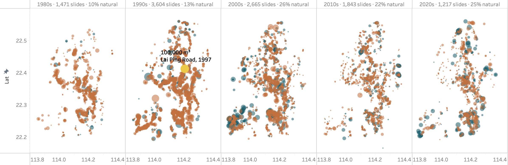
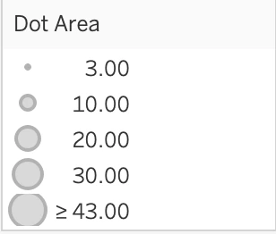
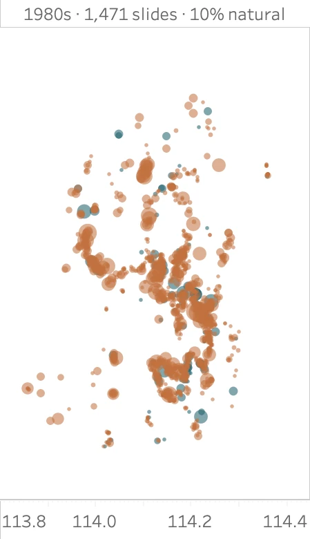
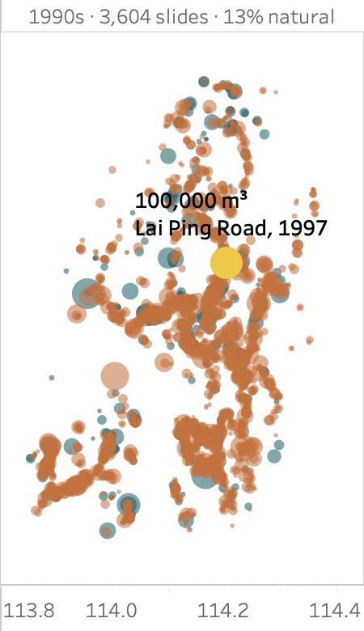
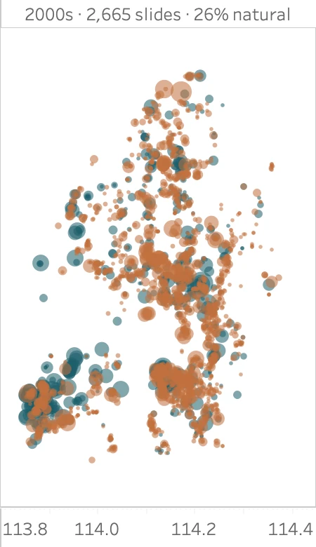
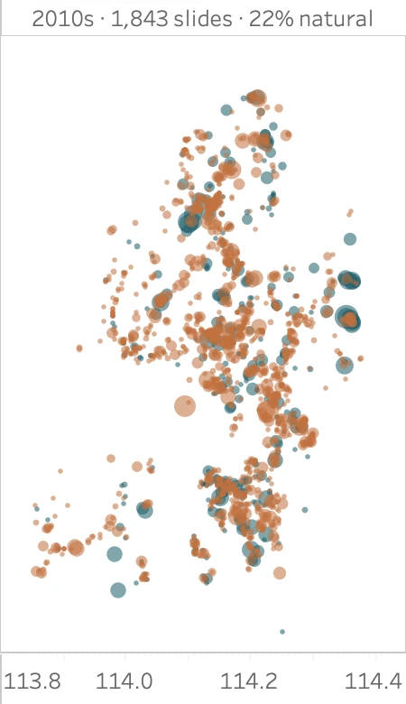
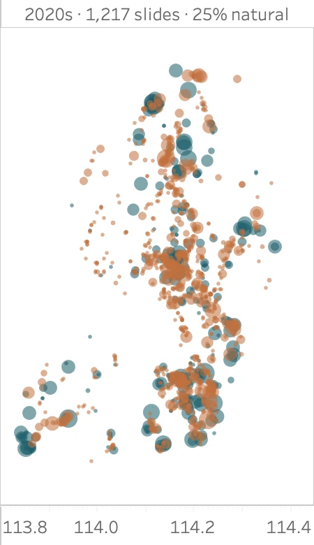
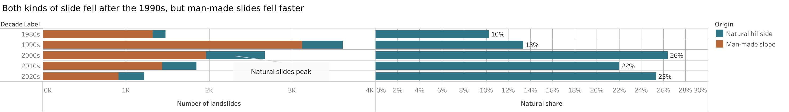

The 1980s
Of 1,471 slides, only about one in ten happened on a natural hillside. Brown dots blanket the map. Teal ones are rare.
On 18 June 1972, a rainstorm caused two landslides and killed 71 people in Sau Mau Ping and 67 more on Po Shan Road, respectively. Four years later, hillsides at Sau Mau Ping slid again, killing 18 people.
In 1977, the Hong Kong government built the Geotechnical Engineering Office (GEO) to ensure the safety of hillslopes.
Hong Kong is known as mountainous, with little flat land. We want to know whether man-made hillslopes or natural ones fail more frequently.
It is found that the failure of natural hillsides is around a quarter of all slides, and this ratio was 1/10 in the past.
“Hong Kong has a large amount of mountain with limited flat lands.”40 years of landslip prevention
Each dot in the map below is one place where a hillside gave way. The government’s landslide record sorts every incident into one of two kinds: a man-made slope or a natural hillside.
Here is the whole record at once, split into five decades.


In the 1980s it is hard to find natural hillsides on map. By the 2020s they are everywhere.
Scroll through the five decades one at a time.





Of 1,471 slides, only about one in ten happened on a natural hillside. Brown dots blanket the map. Teal ones are rare.
There were 3,604 slides, more than double the 1980s. Natural hillsides are still a minority at 13%.
The yellow dot is Lai Ping Road, 1997. The largest-scale landslide among all. The volume was about 100,000 cubic metres
Total slides reduced to 2,665, but the natural share doubles to 26%. In the lower-left corner a cluster of large teal dots appears near to Lantau Island.
A rainstorm on 7 June 2008 set off about 2,400 natural-terrain landslides on Lantau.
1,843 slides, about half the 1990s peak. The natural share eases to 22%.
1,217 slides up to now, 25% of them are natural. The decade is not over, so the count will grow.
We split each decade’s total by it's type, using the percentages to analysis the amount of their failure.

Both count reduced. Man-made slides drop from roughly 3,100 in the 1990s to roughly 900 so far in the 2020s, a fall of about 70%. Natural-hillside slides peak near 690 in the 2000s, then reduced to around 300.
Natural hillsides are a growing share. From 10% in the 1980s to 25% in the 2020s, a 2.5-fold rise.
The peak has passed. The 1990s recorded 3,604 slides. The 2010s recorded 1,843, about half.
Lai Ping Road in 1997. At 100,000 cubic metres, is the largest landslide among more than ten thousand.